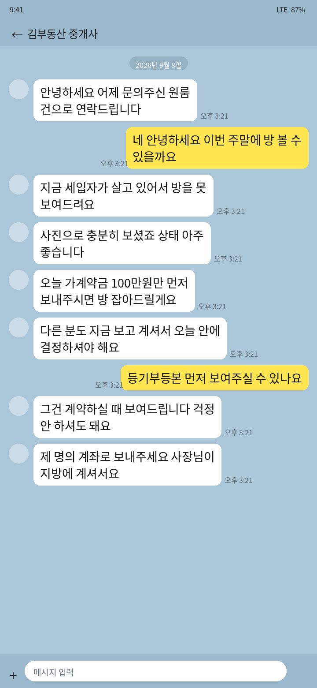
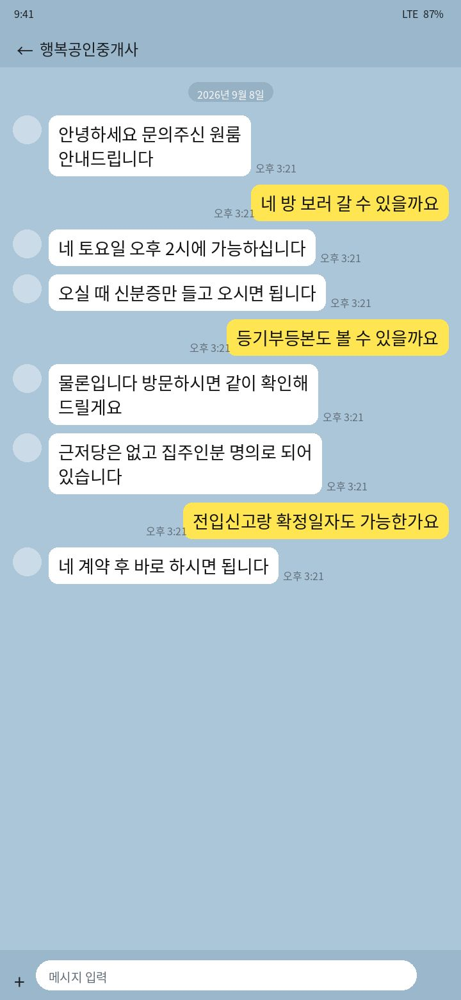
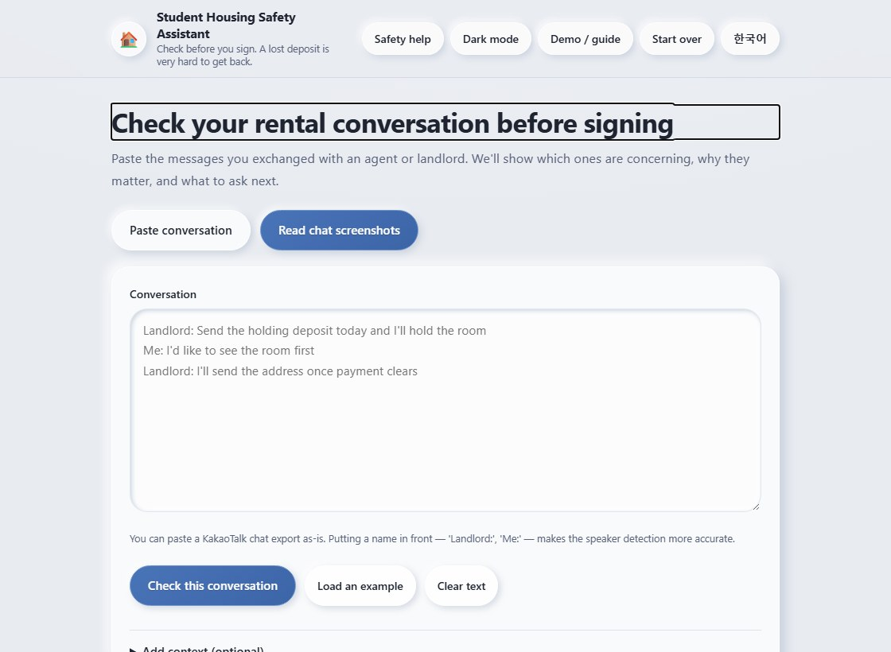
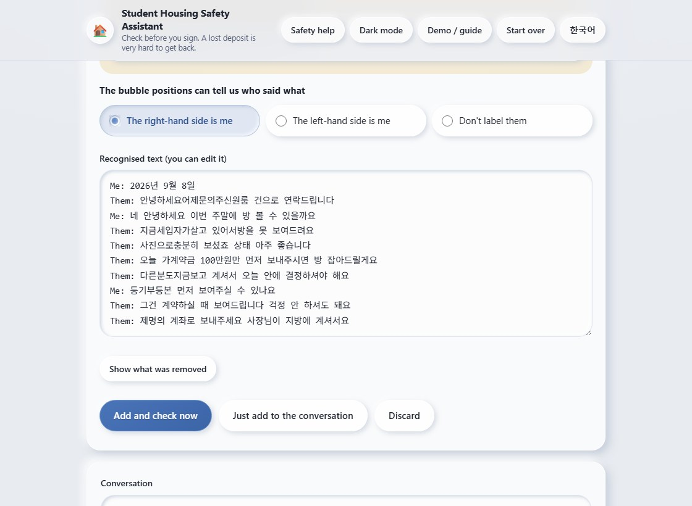
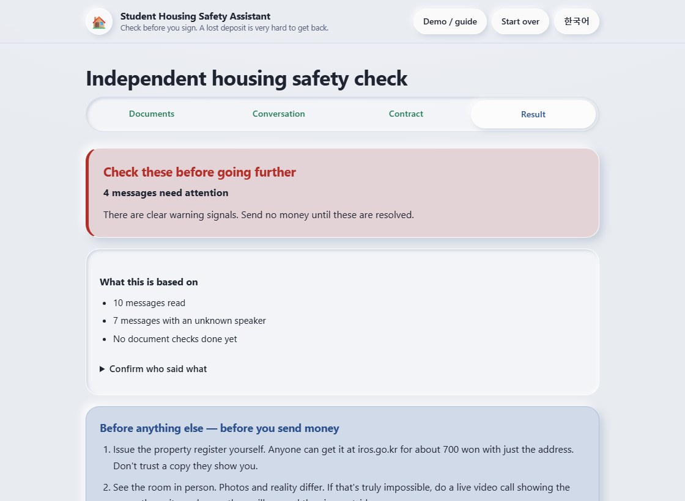
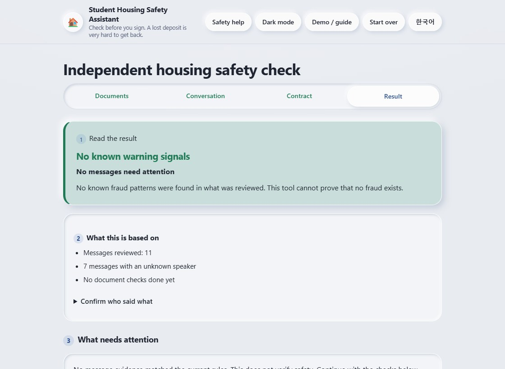
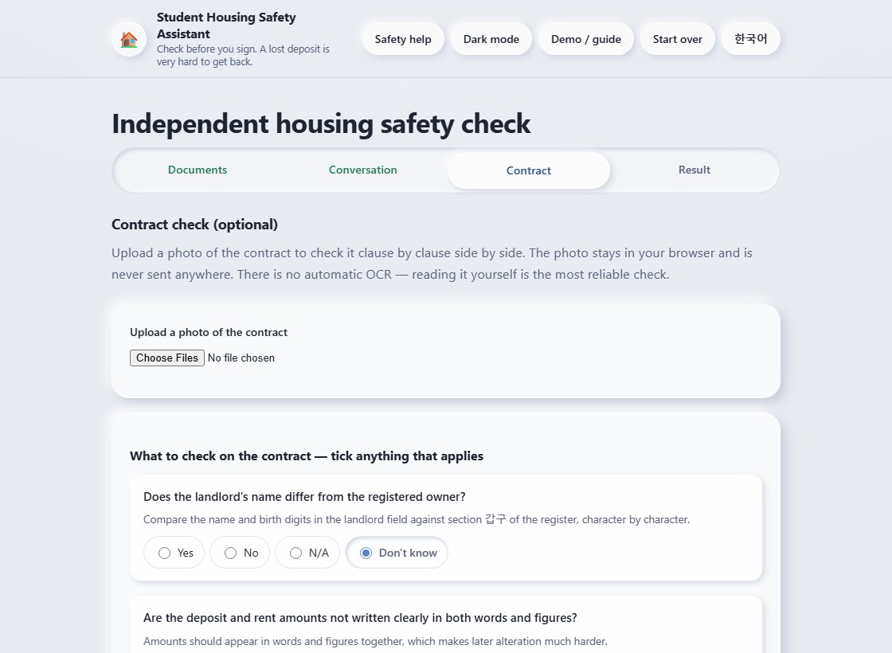
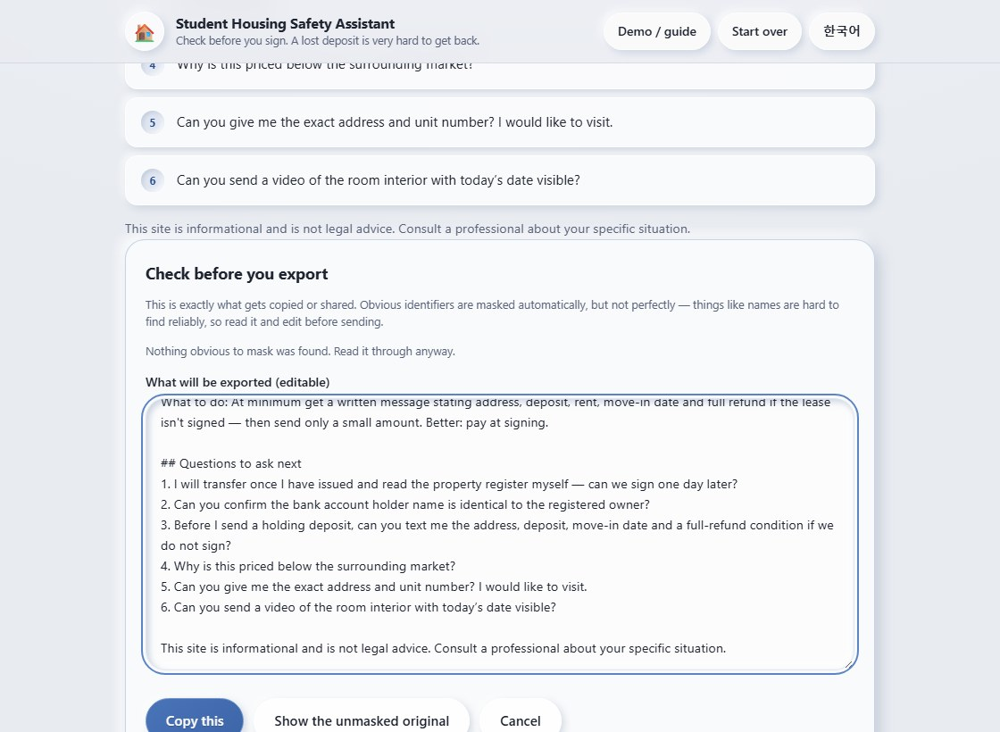
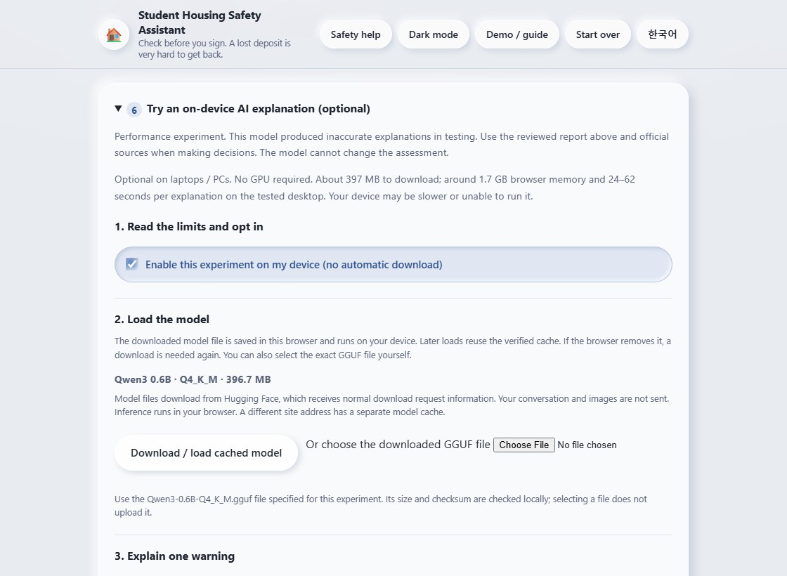
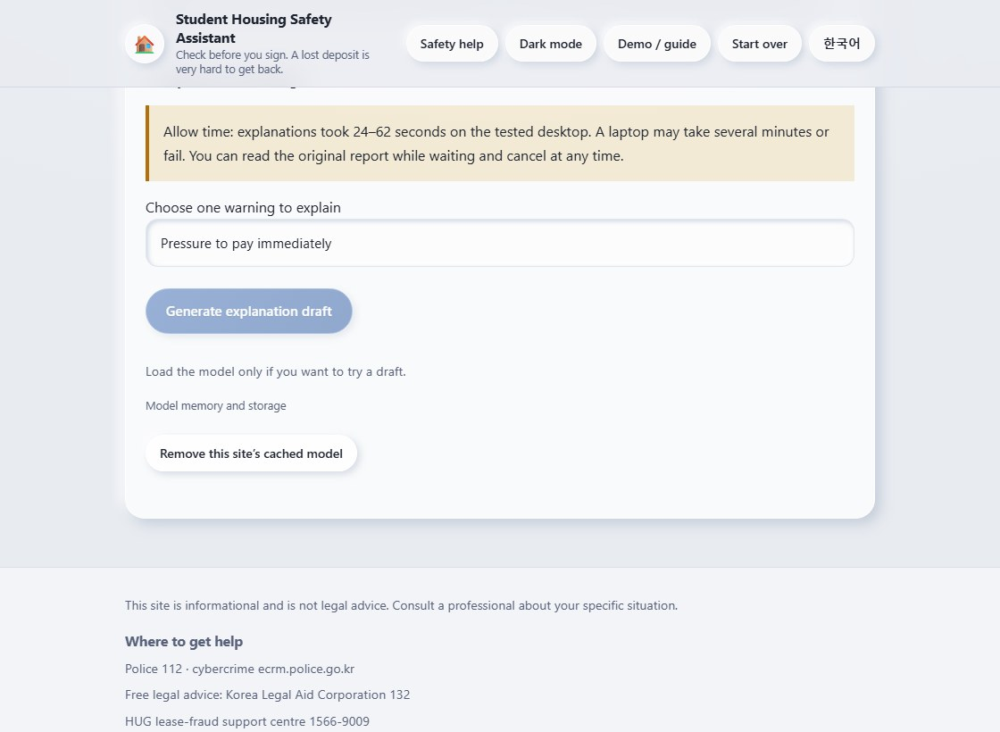

예시 A · 확인 필요SAMPLE A / PRESSURE
“오늘 먼저 입금하세요”“Send the deposit today”
방을 보여주기 전 송금 요구와 대리인 계좌 요청이 있습니다.A payment request before viewing, urgency, and an agent’s account.

가상 예시 A 다운로드Download fictional sample A데모 · 사용 설명서DEMO / USER GUIDE
가상 카카오톡 예시로 스크린샷 읽기, 내용 수정, 위험 신호 확인 과정을 배워 보세요. 아래 화면은 실제 앱을 실행해 캡처했습니다.Follow a fictional KakaoTalk conversation through screenshot reading, text review and warning checks. The screens below were captured from the running app.
예시를 내려받은 뒤 새 탭에서 도구를 여세요. 첫 번째는 입금 압박, 두 번째는 정상적인 방문 일정 대화입니다.Download a sample, then open the checker in a new tab. The first contains payment pressure; the second arranges an ordinary viewing.
예시 A · 확인 필요SAMPLE A / PRESSURE
방을 보여주기 전 송금 요구와 대리인 계좌 요청이 있습니다.A payment request before viewing, urgency, and an agent’s account.

가상 예시 A 다운로드Download fictional sample A예시 B · 일반 대화SAMPLE B / ORDINARY
방문과 서류 확인을 제안하는 대화로 비교합니다.An ordinary exchange offering a viewing and document checks.

가상 예시 B 다운로드Download fictional sample B원본: 저장소의 demo/screenshots/01, 02. Python으로 그린 가상 대화입니다.Source: demo/screenshots/01 and 02 in the repository. Invented conversations drawn with Python.
새 탭에서 도구 열기Open the checker in a new tab ↗OCR은 휴대폰과 PC의 브라우저에서 실행됩니다. 처음 사용하면 이 사이트에서 OCR 엔진과 한국어 모델을 불러옵니다. 사진을 서버로 보내지 않습니다.OCR runs in the phone or PC browser. On first use it loads the OCR engine and Korean model from this site. It does not upload the image to a server.

OCR은 자동으로 대화를 전송하거나 분석하지 않습니다. 기본값은 화자를 구분하지 않는 것입니다. 상대방이 집주인인지 중개인인지는 결과의 화자 확인에서 별도로 확인해야 합니다.OCR does not automatically submit or analyze its draft. Side selection starts as “Don't label them”. The other person's role (owner or agent) still needs confirmation in the report.

예시 A를 분석한 다음 전체 초기화하고 예시 B로 같은 과정을 반복하세요. 서로 다른 대화가 합쳐지지 않게 합니다.After sample A, use Reset session before repeating the same flow with sample B. This keeps two separate conversations from being combined.
아래 실제 결과 화면을 확인하세요.See the actual result capture below.

아래 실제 결과 화면을 확인하세요.See the actual result capture below.

두 예시는 시연용이며 정확도 평가 데이터가 아닙니다. 촬영 기기나 수정한 글에 따라 결과가 달라질 수 있습니다.These two examples demonstrate behavior, not detection accuracy. Capture quality or edited text can change the result.
“서류 확인”에서 등기 등 필요한 항목을 읽고 실제 확인한 내용만 답하세요. 계약서 단계에서는 사진을 보면서 확인 항목을 검토할 수 있습니다. 모르면 미확인 상태로 두세요.Open Document check, read the requested items and answer only what you have actually verified. The contract step lets you view a photo while completing a checklist. Leave unknown items unanswered.

결과 복사·공유·인쇄는 먼저 편집 가능한 미리보기를 엽니다. 감지한 연락처·계좌 등은 가려집니다. 이름 등 놓친 정보는 직접 지우고, 검토 후 최종 버튼을 누르세요.Copy, share and print first open an editable preview. Detected identifiers such as phone and account numbers are masked. Remove names or details the automatic masking missed, then use the final action button.



AI에는 선택한 경고의 안내문만 전달하며 원본 대화나 이미지를 넣지 않습니다. 초안은 결과의 위험 수준을 바꾸거나 내보내기에 포함되지 않습니다.The AI receives guidance for one selected warning, without the original conversation or images. Its draft cannot change the assessment and is excluded from exports.
프로젝트 만들기BUILD THE PROJECT
제작자 Bui Xuan Mai의 한국어·영문 프로젝트 가이드에서 구현 과정과 재현 가능한 프롬프트를 확인하세요.Read the Korean or English project guide by maker Bui Xuan Mai for the implementation process and reproducible prompts.
{kind=link}
{kind=link}